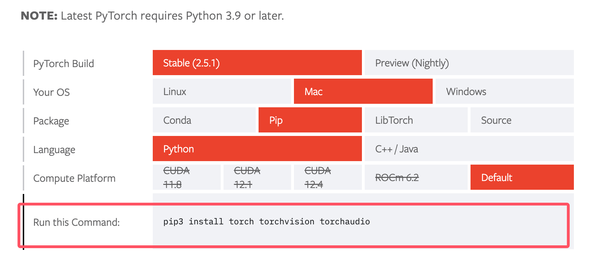

PyTorch インストール
PyTorch は、CPU と GPU コンピューティングをサポートする人気の深層学習フレームワークです。
対応オペレーティングシステム
- Windows：Windows 10 以降（64ビット）
- macOS：macOS 10.15 (Catalina) 以降
- Linux：主要ディストリビューション（Ubuntu 18.04+、CentOS 7+、RHEL 7+ など）
Python バージョン要件
- 推奨バージョン：Python 3.8 - 3.11
- 最低要件：Python 3.7
- 注意：Python 3.12+ のサポートは限定的な場合があるため、安定版の使用を推奨します
ハードウェア要件
- CPU：SSE4.2 命令セットをサポートする x86_64 プロセッサ
- メモリ：最低 4GB RAM（推奨 8GB 以上）
- ストレージ：最低 3GB の空き容量
- GPU（オプション）：CUDA Compute Capability 3.5+ を備えた NVIDIA GPU
CUDA 互換性（GPU バージョン）
| PyTorch バージョン | 対応 CUDA バージョン | 推奨 CUDA バージョン |
|---|---|---|
| 2.1.x | 11.8, 12.1 | 12.1 |
| 2.0.x | 11.7, 11.8 | 11.8 |
| 1.13.x | 11.6, 11.7 | 11.7 |
インストール前の準備
システム情報の確認
Windows:
# 检查 Windows 版本 winver # 检查 Python 版本 python --version # 检查是否有 NVIDIA GPU nvidia-smi
macOS
# 检查 macOS 版本 sw_vers # 检查 Python 版本 python3 --version # 检查是否有兼容的 GPU（Apple Silicon） system_profiler SPDisplaysDataType
Linux
# 检查发行版信息 cat /etc/os-release # 检查 Python 版本 python3 --version # 检查 NVIDIA GPU nvidia-smi # 检查 CUDA 版本（如果已安装） nvcc --version
Python 環境管理
Anaconda/Miniconda を使用：
# 下载并安装 Miniconda # Windows: https://repo.anaconda.com/miniconda/Miniconda3-latest-Windows-x86_64.exe # macOS: https://repo.anaconda.com/miniconda/Miniconda3-latest-MacOSX-x86_64.sh # Linux: https://repo.anaconda.com/miniconda/Miniconda3-latest-Linux-x86_64.sh # 创建专用环境 conda create -n pytorch_env python=3.10 conda activate pytorch_env
venv を使用（Python 標準）
# 创建虚拟环境 python -m venv pytorch_env # 激活环境 # Windows pytorch_env\Scripts\activate # macOS/Linux source pytorch_env/bin/activate
PyTorch のインストール
PyTorch 公式ではいくつかのインストール方法が提供されており、pip または conda でインストールできます。
CPU バージョンのインストール
pip で PyTorch をインストール：
# 最新稳定版本 pip install torch torchvision torchaudio # 指定版本 pip install torch==2.1.0 torchvision==0.16.0 torchaudio==2.1.0 # 仅 CPU 版本（更小的安装包） pip install torch torchvision torchaudio --index-url https://download.pytorch.org/whl/cpu
conda でインストール：
Anaconda または Miniconda で Python 環境を管理している場合、conda を使用して PyTorch をインストールする方がより簡単で効率的な場合があります。
# 从 conda-forge 安装 conda install pytorch torchvision torchaudio cpuonly -c pytorch # 或从 conda-forge 渠道 conda install pytorch torchvision torchaudio -c conda-forge
Anaconda について詳しくない場合は、以下を参照してください：Anaconda チュートリアル
PyTorch 公式サイトからのインストール
PyTorch の公式ウェブサイトにアクセスしますhttps://pytorch.org/get-started/locally/。このサイトでは、システム構成（オペレーティングシステム、パッケージマネージャー、Python バージョン、CUDA バージョン）に応じてインストールコマンドを推奨する便利なツールが提供されています。

ソースコードからのインストール
ソースコードから PyTorch をインストールする必要がある場合や、最新の開発バージョンを試したい場合は、次のコマンドを使用できます：
git clone --recursive https://github.com/pytorch/pytorch cd pytorch python setup.py install
これにより、GitHub から PyTorch のソースコードがクローンされ、setup.py を使用してインストールされます。
GPU バージョンのインストール（CUDA）
CUDA のインストール（必要な場合）：
# Ubuntu/Debian wget https://developer.download.nvidia.com/compute/cuda/repos/ubuntu2004/x86_64/cuda-ubuntu2004.pin sudo mv cuda-ubuntu2004.pin /etc/apt/preferences.d/cuda-repository-pin-600 wget https://developer.download.nvidia.com/compute/cuda/12.1.0/local_installers/cuda-repo-ubuntu2004-12-1-local_12.1.0-530.30.02-1_amd64.deb sudo dpkg -i cuda-repo-ubuntu2004-12-1-local_12.1.0-530.30.02-1_amd64.deb sudo cp /var/cuda-repo-ubuntu2004-12-1-local/cuda-*-keyring.gpg /usr/share/keyrings/ sudo apt-get update sudo apt-get -y install cuda # CentOS/RHEL sudo yum install -y https://developer.download.nvidia.com/compute/cuda/repos/rhel8/x86_64/cuda-repo-rhel8-12.1.0-1.x86_64.rpm sudo yum clean all sudo yum -y install cuda
PyTorch GPU バージョンのインストール：
# CUDA 12.1 版本 pip install torch torchvision torchaudio # CUDA 11.8 版本 pip install torch torchvision torchaudio --index-url https://download.pytorch.org/whl/cu118 # 使用 conda conda install pytorch torchvision torchaudio pytorch-cuda=12.1 -c pytorch -c nvidia
macOS に関する特別な説明
Apple Silicon (M1/M2) Mac:
# 使用 Metal Performance Shaders (MPS) 后端 pip install torch torchvision torchaudio # 验证 MPS 可用性 python -c "import torch; print(torch.backends.mps.is_available())"
Intel Mac:
# 标准安装 pip install torch torchvision torchaudio
インストールの検証
PyTorch が正しくインストールされていることを確認するには、次の PyTorch コードを実行してインストールが成功したかどうかを検証できます：
例
# 現在インストールされている PyTorch ライブラリのバージョン
print(torch.__version__)
# CUDA が利用可能かどうか（つまり、システムに NVIDIA GPU があるかどうか）を確認します
print(torch.cuda.is_available())
もしtorch.cuda.is_available()出力が True の場合、PyTorch が GPU を正常に認識したことを意味します。
ランダムに初期化されたテンソルを構築する簡単な例：
例
x = torch.rand(5, 3)
print(x)
インストールが成功すると、出力結果は次のようになります：
tensor([[0.3380, 0.3845, 0.3217],
[0.8337, 0.9050, 0.2650],
[0.2979, 0.7141, 0.9069],
[0.1449, 0.1132, 0.1375],
[0.4675, 0.3947, 0.1426]])
その他の拡張
クリックしてノートを共有
<p style="font-size:14px;">ノートは本記事の内容の拡張である必要があります！</p><br> <p style="font-size:12px;"><a href="../tougao.html" target="_blank">記事の投稿は、こちらをクリック</a></p> <p style="font-size:14px;"><a href="../w3cnote/runoob-user-test-intro.html" target="_blank">登録招待コードの取得方法</a></p> <h3 class="text-muted"><i class="fa fa-info-circle" aria-hidden="true"></i> ノートを共有する前に<a href=";.html" class="runoob-pop">ログイン</a>が必要です！</h3> <p><a href="../w3cnote/runoob-user-test-intro.html" target="_blank">登録招待コードの取得方法</a></p>